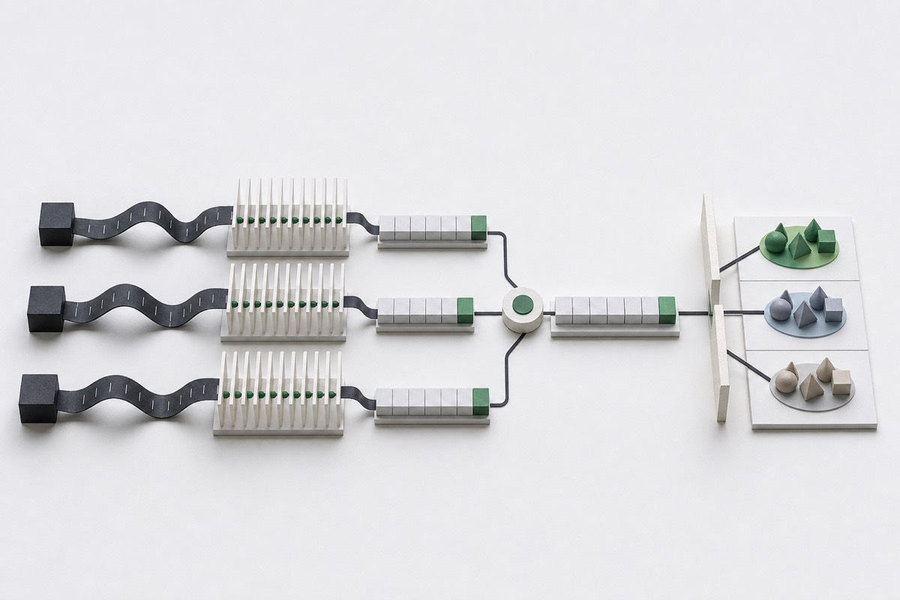

Research method note · UNC Miao Lab
HSP90 / LiGaMD
Thousands of saved frames from one protein–ligand simulation are repeated measurements, not thousands of independent labels. This workflow turns three LiGaMD replicas into one system-level record before grouped evaluation.

Project at a glance
- Type
- Scientific ML evaluation · Public toolkit
- Time
- Jun 2025—Present
- My work shown here
- Trajectory features and grouped evaluation path
- Core problem
- Repeated frames can inflate model evaluation
- Recorded result
- N31 / 27 groups · no model selected
- Stack
- Python · NumPy / SciPy · scikit-learn · RDKit
01 / Problem
A trajectory contains many frames but only one system-level label.
Frames from the same molecular-dynamics trajectory are correlated observations of one protein–ligand system. Treating each frame as a separate labelled example would multiply the apparent sample size without adding independent experimental pKoff measurements.
The three simulation replicas create another boundary. They should contribute information about the same system, but their coordinates should not be concatenated into one artificial trajectory. Each replica needs its own endpoint check, frame selection, and feature vector before the corresponding features are combined.
02 / Method
Build one auditable row for each protein–ligand system.
Analysis pipelineOne evaluated row per protein–ligand system
- Input3 replicas
- EndpointSustained exit
- Per replica512 real frames
- SummarizeDynamic10 vector
- System rowStatic20 + mean Dynamic10
- SplitExact-ligand holdout
- CompareBootstrap uncertaintyNo model selected
Exit onset, persistence, recapture, replica status
Static20 plus replica-averaged Dynamic10
Exact-ligand holdout and fold-local preprocessing
03 / Decisions
The evaluation starts before a model is fitted.
Decision 01
Require a sustained exit and record recapture.
- Why
- One noisy distance crossing does not establish that the ligand completed an exit episode.
- Alternative considered
- Label the first frame beyond a single distance threshold as the dissociation event.
- Trade-off
- The endpoint needs persistence and geometry rules, but transient crossings and post-event recapture remain distinguishable.
Decision 02
Summarize each replica before averaging.
- Why
- Concatenating coordinates would erase replica identity and make unequal or failed replicas difficult to diagnose.
- Alternative considered
- Merge all frames from all replicas, then compute one feature vector.
- Trade-off
- Each replica needs a complete endpoint and 512-frame record. If one replica fails, the toolkit returns an out-of-scope status instead of a partial average.
Decision 03
Split by exact-ligand group and fit preprocessing inside the fold.
- Why
- The same standardized ligand chemistry should not appear in both training and test data within a fold.
- Alternative considered
- Randomly split system rows or preprocess once on the full dataset.
- Trade-off
- Grouped folds are smaller and more variable, but they reduce exact-ligand leakage and test the model on a genuinely held-out chemistry group.
Decision 04
Require uncertainty before selecting a model.
- Why
- The lowest point estimate can result from a small set of grouped folds rather than a stable improvement.
- Alternative considered
- Name the model with the lowest average MAE as the winner.
- Trade-off
- The project may end with no selected model, but it avoids turning an unstable difference into a performance claim.
04 / Evaluation
The lowest MAE was not enough to select a model.
Frozen N31 engineering panel
Each outer fold held out an entire exact-ligand group. The target was experimental, assay-derived pKoff. The table reports aggregate point estimates from the public experimental registry.
| Model | Inputs | Group-equal MAE | Role |
|---|---|---|---|
static20_ridge | Static20 | 0.8845 | Linear static reference |
static20_random_forest | Static20 | 0.8501 | Nonlinear static reference |
combined30_p512_ridge | Static20 + Dynamic10 | 0.8182 | Dynamic-information candidate |
combined30_p512_random_forest | Static20 + Dynamic10 | 0.8275 | Nonlinear dynamic candidate |
05 / Scope
The target is experimental pKoff, not a physical rate read from simulation time.
Current scope
Public analysis toolkit and experimental registry
- Replica-aware endpoint and P512 feature contracts
- One system row and exact-ligand grouped folds
- Four bundled experimental regression pipelines
- Aggregate N31 evidence and model cards
Not established
Physical kinetics or broad generalization
- Simulation time does not directly yield physical koff
- N31 does not establish unseen-protein-family performance
- The current cadence record limits Dynamic10 comparability
- No final or selected model
Proposed next validation
Add evidence, not an unbounded model search
Admit new systems only after identity, assay-label, replica, endpoint, feature-lineage, and saved-frame cadence checks. Re-run the frozen grouped comparison before considering additional model capacity.